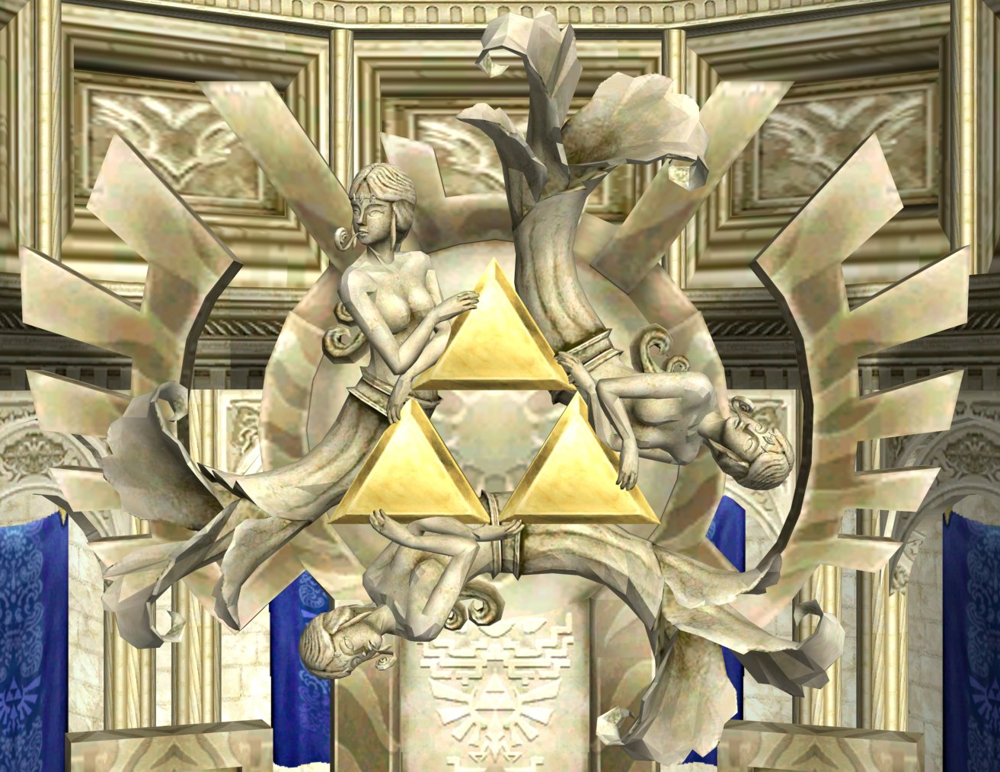
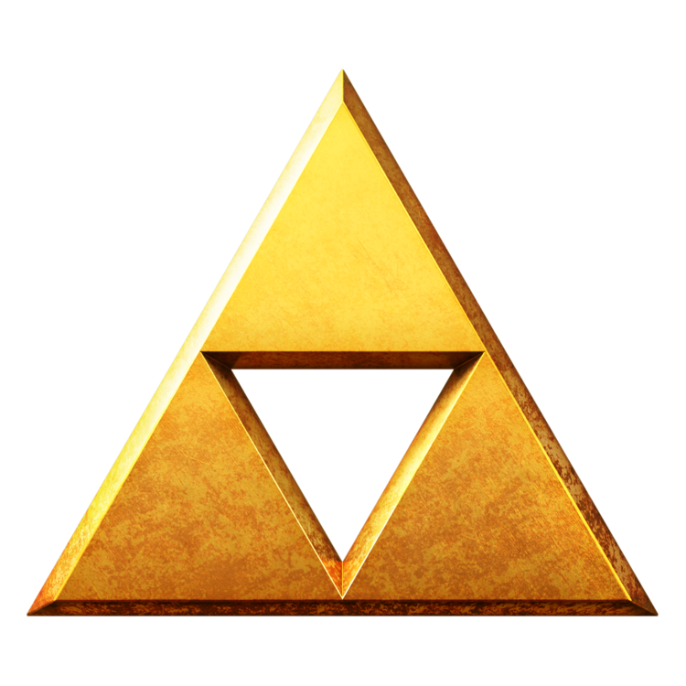
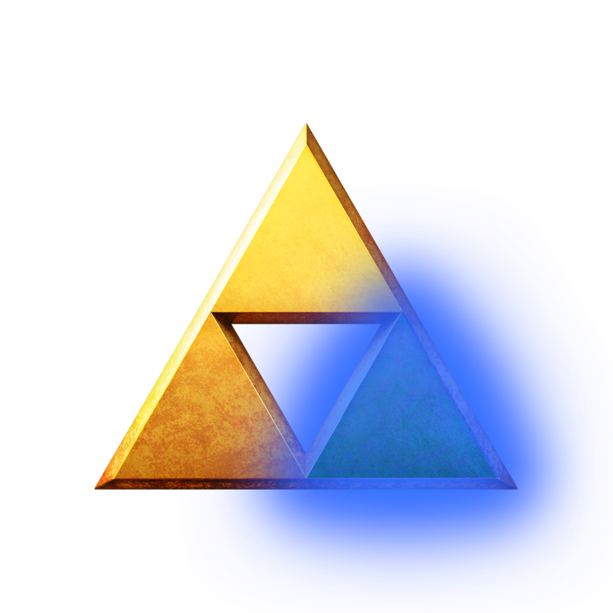
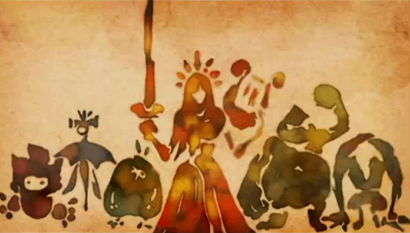
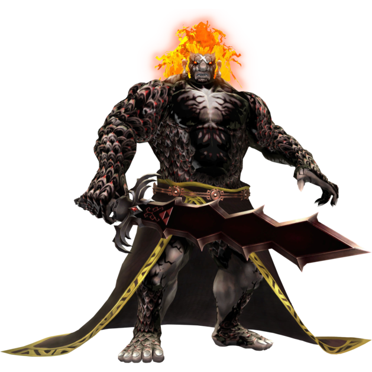

Lore
While The Legend of Zelda is a series that is mostly praised for its exploration, is also has a notable plot. Parts of the plot are revealed as the games continue. This page will function as a brief overview of some of the most notable aspects of the Zelda lore. Play the music above for a little extra ambience!
The Golden Goddesses
 The Three Golden Goddess's of old are the creators of the entire world. After they created the land, the people and gave the world order, the departed into sacred realm to rest. Upon their exit, they left behind the Triforce, a sacred relic that gave man the power of creation.
-
Din
The Goddess of Power. Din, with her strong arms created the rich red soil of the world. She is associated with the bright red flames of the Eldin region, and her power is celebrated by the Goron Tribe. Her Priestess Oracle is the fiery Oracle of Seasons and shares her name.
-
Nayru
The Goddess of Wisdom. Nayru with her sound mind, gave order the soil that Din summoned forth. Nayru is praised as the Goddess of Time. Those who seek safe passage through time must pray to her. Her intellect and grace are celebrated by the Zora people. Her priestess is the Oracle of Time and shares the same name.
-
Farore
The Goddess of Courage. Farore gave the newly born world life, populating the barren earth with plants, animals, and people. Farore is the token Goddess of The Chosen Hero. She is celebrated by the Kokiri people. Her priestess is the Oracle of Mysteries whom shares her name.
The Triforce 
The Golden Triangles that The Golden Goddesses left behind when they entered the sacred realm. Any mortal who controls the Triforce has control over the power of creation itself, thus granting them any wish. However, in order to properly control the Triforce, its user must be perfectly balanced in all three aspects of the Goddesses: power, wisdom, courage. Should an unbalanced individual ever grasp the sacred relic, it will split into three with each piece seeking out the person that most represents its quality.
-
Triforce of Power
The wielder of the Triforce of Power will be granted the omnipotence of the Goddess Din. This grants the user, super-human abilities including the ability to transform into a beast.
-
Triforce of Wisdom 
The wielder of the Triforce of Wisdom will be granted the omniscience of the Goddess Nayru. This often appears as magic abilities including telekinesis and telepathy.
-
Triforce of Courage
The wielder of the Triforce of Courage is granted the eternal tenacity of the Goddess Farore. Additionally, the owner of this piece will be able to wield the Blade of Evil's bane, the Master Sword.
The New Goddess Vs. The Demon King
 Upon the Golden Goddess's exit, they entrusted the Triforce to the lesser Goddess Hylia. Hylia and her army of light fought the evil King of Demons, Demise and sealed him away. The Goddess Hylia, now feeling her work was done decided to reincarnate as a mortal to enjoy the new peace she had created.
 After some time, the seal weakened, and the horribly disfigured Demon king was revived. It was up to the Goddess' chosen Hero and her reincarnation to stop Demise the Demon King from taking over the world. In their quest, the Chosen Hero forged the Master Sword, a legendary blade that could defeat the Demon King forever. So, the Hero and the Demon King faced off one-on-one. Although a fierce battle, the Chosen Hero was victorious. With the Demon King's final breath, he placed a curse on the Chosen Hero and Goddess' bloodline. All future descendants would be cursed by an Incarnation of Evil.
This Incarnation of Evil would follow the bloodline of these characters for all time, and regardless of their efforts, peace would always eventually be broken by the Demon King's malice.